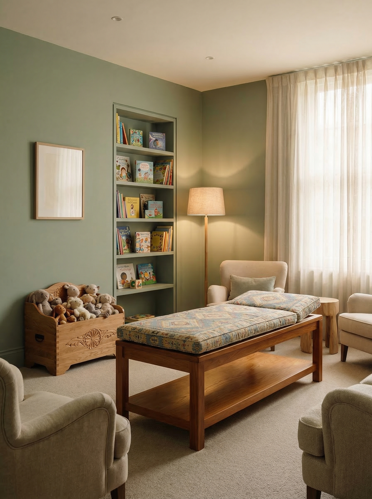

Same-day children's GP appointments in Fulwood, Preston. From infants to teenagers — thorough, unhurried care from Dr Faizal Secretary. From £49.
From £49 · All Ages · Prescriptions Included

Who This Is For
"Parents who can't get their child seen quickly enough on the NHS. Parents who want a longer appointment to cover everything properly."
When your child is unwell and the NHS can't see them quickly enough — Dr Faizal Secretary has the time to listen to both you and your child properly, covering everything on your list at our Preston clinic.
No referral needed. Infants through to teenagers, seen as soon as the same day.
Fever, sore throat, ear pain, chest infections — seen and treated the same day, not in a fortnight.
Eczema, rashes, hives and other skin concerns assessed properly, with treatment prescribed on the spot.
If your child keeps getting ill, the doctor will look at why — not just treat each episode in isolation.
Worries about weight, height, milestones or behaviour discussed without the wait for a paediatric referral.
Food, environmental and seasonal allergies assessed — with referrals arranged where needed.
Review, diagnosis and inhaler management for children with breathing difficulties or persistent coughs.
Medical letters for schools and nurseries written and issued as part of your appointment.
Prescription writing is included in all consultations. Medication dispensed at any pharmacy at standard cost.
Call us or book online. Same-day slots are available — particularly on Fridays.
The doctor sees children of all ages, from newborns to teenagers. He'll examine your child and explain everything clearly.
Everything arranged before you leave.
Private healthcare for children comes with responsibilities that go beyond clinical care. Here is how we approach safeguarding — clearly, and without jargon.
Every consultation involving a child is shared with their NHS GP as standard. This is not optional — it is our policy, and it is the right thing to do. A complete health picture, across every setting your child is seen in, leads to better care.
Every child we see is registered with the clinic before their first appointment. This allows us to maintain a full view of their health over time. It does not affect your NHS registration — your child keeps their NHS GP and all NHS entitlements.
Dr Faizal Secretary treats children within his clinical competency. If a concern requires specialist input, he will refer directly to a paediatrician — or back to your NHS GP for onward referral. You will always leave with a clear next step and a full explanation of why.
A parent or legal guardian must attend the first registration appointment. Photo identification for the accompanying adult will be requested. If your child is brought by anyone other than a parent, written signed consent is required in advance and additional identification checks will take place.
Older children and teenagers have a right to confidential appointments, and we respect that. We will always encourage young people to involve their parents where appropriate. If at any point a young person's safety is at risk, their safety takes priority over confidentiality.
If during any appointment there are concerns about a child's safety or welfare, we have a legal duty under the Children Act 1989 and Working Together to Safeguard Children 2023 to act — including referring to Children's Social Care. In serious cases, this may happen without parental consent. The safety of the child is always the overriding priority.
All clinical staff are DBS-checked and trained in safeguarding to RCGP Level 3 standards. A chaperone policy is in place and available on request.
Dr Faizal Secretary is the Named Safeguarding Lead for both children and adults at risk. If you have a concern about a child's safety — whether or not they are a patient here — you can raise it directly with the clinic.
If you have an urgent safeguarding concern outside of clinic hours, contact the NSPCC helpline on 0808 800 5000 or call 999.
Every Friday, 9am–8pm. Other days by appointment.
Or email: hello@myprivate.clinic